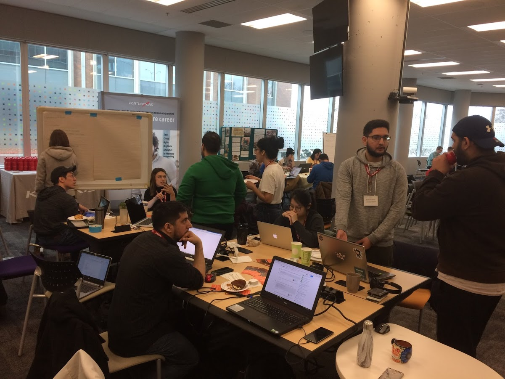
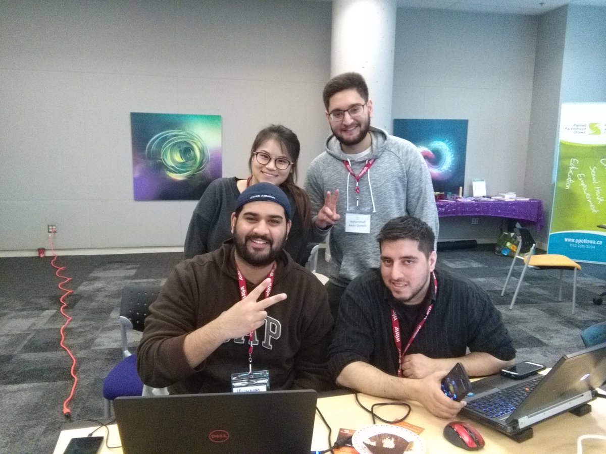
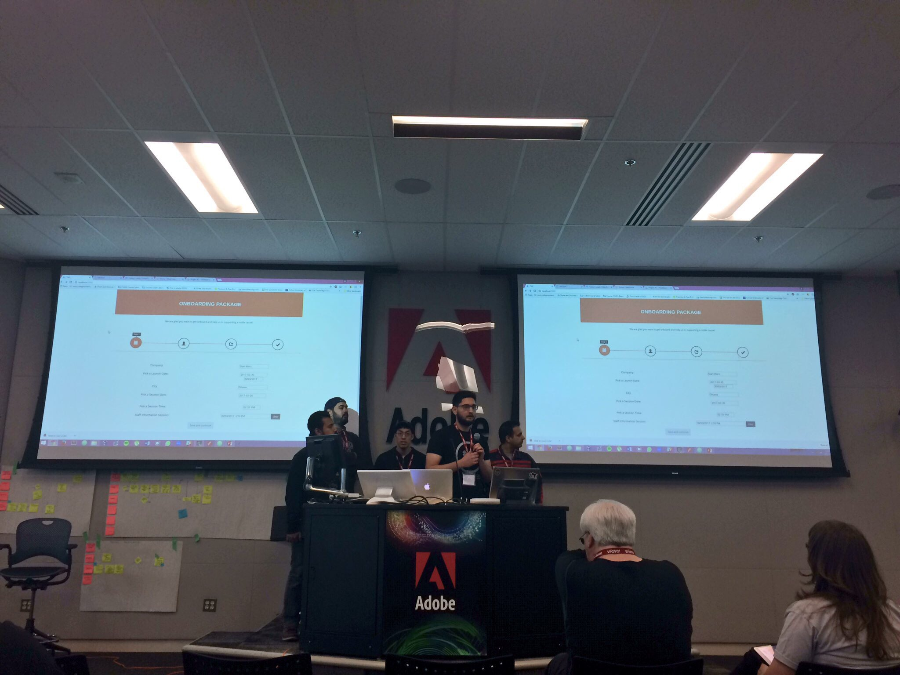
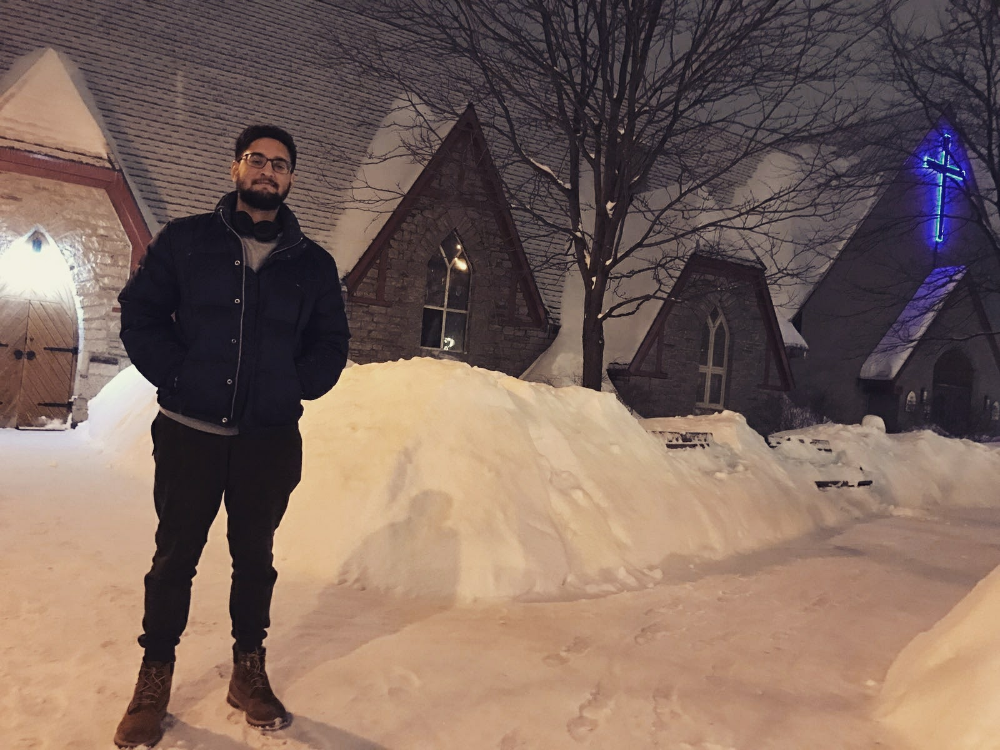

My name is Muhammad Awais Qureshi, a programmer, developer, teacher, photography enthusiast and most importantly learner! I aspire to become the best version of myself possible in every aspect, and hopefully build towards and contribute to something bigger in the future.
There are no secrets to success. It is the result of preparation, hard work, and learning from failure.
Colin Powell
These are the words I live by. Simple, precise and to the point. This quote describes life in one, realistic sentence and carries alot of weight. I hope these words also inspire you to not be discouraged on failures, make a difference and never stop learning!